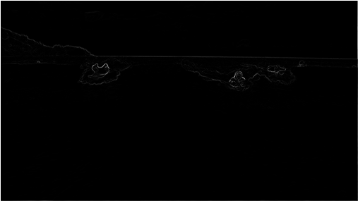

Currently Senior Product Manager at Microsoft helping build Digital Contact Center solutions to help Fortune 500 companies realize Operational Efficiency with cutting-edge AI.
University of Waterloo
Honors Software Engineering | 2017
$whoami
Hello there! I'm currently open to exploring opportunities on a small to mid size product that helps people through full stack web development.
At Microsoft, I worked on D365 Project Service, Modern Project (MS Project Online) and D365 Omnichannel and D365 Unified Routing.
My foray into software started 17 years ago when I created my first website and created a semi-functional replica of Pacman using Turing.
Since then, I have developed a passion for software engineering, playing with new technologies and finding ways to apply my skills to solve real world problems.
Through my undergrad career and work experience primarily as Full Stack Web/Mobile dev, I have developed a keen interest for Machine Learning, Image Processing, and large scale Distributed Systems including distributed databases.
When not coding, I enjoy reading books, exploring and playing chess!
Notable Projects
Here are some projects
that I've worked on in the past.

Image Resize written in Java.
This picture shows the energy map of an image. I implemented the Seam Carving algorithm in Java
and currently it can detect the path of minimum energy and remove that so that the main portions of the image
are not reduced. It eventually will have the functionality to remove certain objects from pictures.
Created a Hologram with a group of 3 others for NwHacks 2016.
Created a Hologram using Unity3D with C# and built a client-server model to push new 3D models to phones.
I specifically worked on the Unity3D and C# components integrating it with the server endpoints.